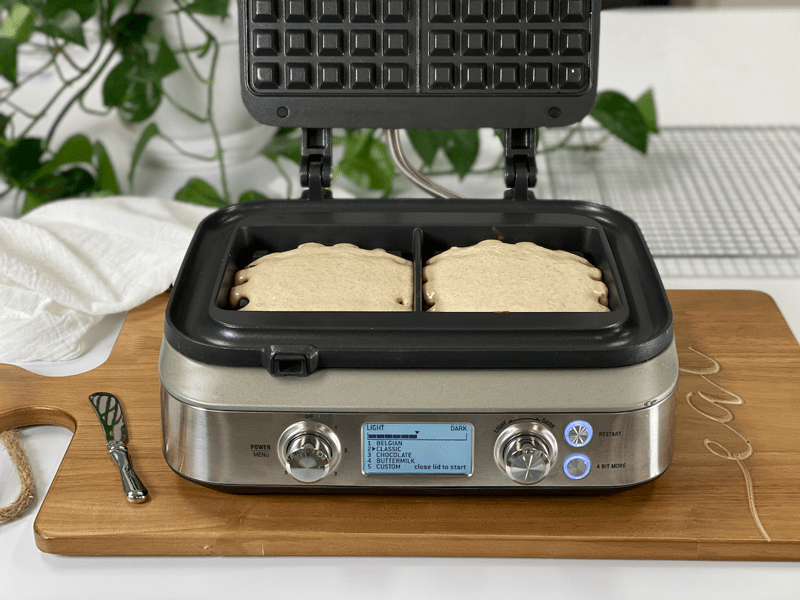
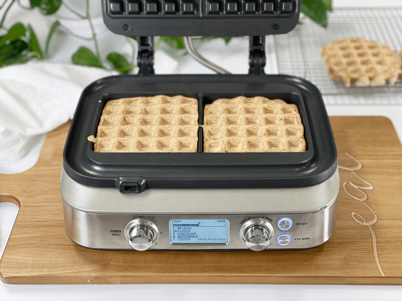

Simple Oat Waffles | Oil-free
Simple Oat Waffles. Simple name. Simple ingredients. But don’t let the simplicity turn you off. Food doesn’t have to be complex to be good. I would refer to this as a “pantry waffle.” Open up your pantry, pull out the ingredients, and boom! You will find yourself whipping up a batch of waffles in no time.

No eggs, milk, baking powder, baking soda…nope, today we are going to use straight up rolled oats, a little sweetener, vanilla, and salt. These waffles are filling and make for a wonderful neutral oat base to accommodate your favorite flavor combinations. Lately, Bob has been spreading some Pecan Cinnamon Butter on his, along with a drizzle of maple syrup. I have to admit that does sound pretty amazing. Me, I’m all about bananas. Perhaps it’s a phase I am going through, but it’s one that is pretty darn tasty.
I would like to note that although you may expect the waffles to brown when they are cooked–they don’t. If you upped the sweetener, that would help with the Maillard reaction which is a chemical reaction between amino acids and reducing sugars that gives browned food its distinctive flavor. Pale-blond waffles are the new rage (or at least we can pretend.)
Technique and Tips
No-Oil Waffles
- This recipe was purposely created to be oil/fat-free, but that’s due to my own personal preference. It doesn’t really need oil, and my husband, who likes healthy fatty foods, found these delicious.
- However, the waffle iron may need a little oil. I didn’t experience any sticking, but if you do, lightly spray a thin coat of oil on the iron griddles. If they still stick, you might have an old waffle iron that might require replacing.
Preheat the Waffle Iron
- It’s important to pour the batter onto a hot waffle iron. You should actually hear the batter sizzle on contact. The outer crust will immediately begin to set and crisp. Moisture in the batter quickly turns to steam and evaporates out the sides of the pan. If the iron isn’t hot, none of this happens and the waffles will be soggy and squishy.
Extra Crispiness
- Bob and I prefer our waffles crispy, so once the waffles are done in the waffle machine, we will pop them in the toaster. It sounds redundant but it’s easy and it works.
- Another tip is to place the cooked waffles on a wire rack so the air can circulate around them, preventing sogginess.
- You need to keep in mind that we are not using traditional ingredients such as eggs, baking soda, baking powder, and milk. All of these ingredients perform a chemistry act that gives waffles that light, airy, and crispy texture. We are challenging the limits of waffle-making with unique ingredients.
 Ingredients
Ingredients
- 2 cups gluten-free rolled oats
- 2 Tbsp maple syrup
- 1 tsp vanilla extract
- 1/2 tsp sea salt
- Water to cover oats in the blender to create a thick batter.
Preparation
- Turn the waffle iron on and allow it to reach cooking temperature.
- Place the oats, sweetener, vanilla, and salt into the blender. Add enough water to just cover the oats. Blend until creamy.
- Let the batter sit for 10 minutes.
- Pour the batter into the center of the waffle iron. Since machines run in different sizes, add enough so the batter can slightly reach out to the sides.
- I didn’t need to use any oil to prevent sticking with my waffle machine. If you feel unsure about the machine you are using, you can either do a small test run or you can lightly coat all cooking surfaces of the waffle iron to help avoid sticking.
- You might need to add a bit more water to keep the batter at a pancake batter consistency, as it starts to thicken the longer it sits.
- With my waffle machine set on “custom,” I cooked for 7 minutes (until the steam coming out reduced).
-
Open the waffle iron lid and leave it open about for 20 seconds (this will help avoid sticking) before gently removing the waffle with a butter knife or fork.
-
Repeat until the batter is used up.
- Topping ideas – Cinnamon Skillet Apples | Oil-Free | Sugar-Free or Great Grandma’s Strawberry Rhubarb Sauce | Sugar-Free
Storage
- IF you have any leftovers, they can be stored in an airtight container in the fridge for your next meal. I would enjoy them within 3 days.
- These waffles can be made in advance and frozen for future meals. Flash freeze by laying them in single layers on a baking sheet and putting them into the freezer. Once frozen, place them in an airtight freezer-safe container. This method will prevent them from sticking together (see above for more details).
-

-
Add the batter to the waffle iron, enough to spread to the sides.
-

-
Here they are, all cooked. As you can see, they don’t darken a lot.
© AmieSue.com